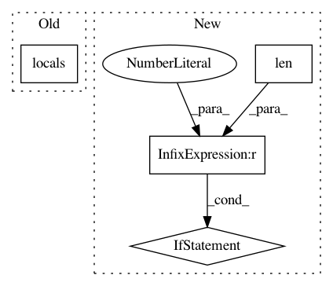

7dbf6335c0fe5ee075645ada966861d1346c21c5,qiskit/chemistry/components/initial_states/hartree_fock.py,HartreeFock,__init__,#HartreeFock#Any#Any#Any#Any#Any#Any#,61
Before Change
ValueError: wrong setting in num_particles and num_orbitals.
ValueError: wrong setting for computed num_qubits and supplied num_qubits.
validate(locals(), self._INPUT_SCHEMA)
super().__init__()
self._sq_list = sq_list
self._qubit_tapering = bool(self._sq_list)
After Change
ValueError: wrong setting for computed num_qubits and supplied num_qubits.
validate_min("num_orbitals", num_orbitals, 1)
if isinstance(num_particles, list) and len(num_particles) != 2:
raise ValueError("Num particles value {}. Number of values allowed is 2".format(
num_particles))
validate_in_set("qubit_mapping", qubit_mapping,
{"jordan_wigner", "parity", "bravyi_kitaev"})
super().__init__()
self._sq_list = sq_list
In pattern: SUPERPATTERN
Frequency: 3
Non-data size: 4
Instances
Project Name: Qiskit/qiskit-aqua
Commit Name: 7dbf6335c0fe5ee075645ada966861d1346c21c5
Time: 2020-01-04
Author: manoel@us.ibm.com
File Name: qiskit/chemistry/components/initial_states/hartree_fock.py
Class Name: HartreeFock
Method Name: __init__
Project Name: Qiskit/qiskit-aqua
Commit Name: 7dbf6335c0fe5ee075645ada966861d1346c21c5
Time: 2020-01-04
Author: manoel@us.ibm.com
File Name: qiskit/chemistry/components/variational_forms/uccsd.py
Class Name: UCCSD
Method Name: __init__
Project Name: theislab/scanpy
Commit Name: 014c834f0051b2015300edb3c41afddcfe3505ed
Time: 2017-06-18
Author: f.alex.wolf@gmx.de
File Name: scanpy/plotting/toplevel.py
Class Name:
Method Name: scatter